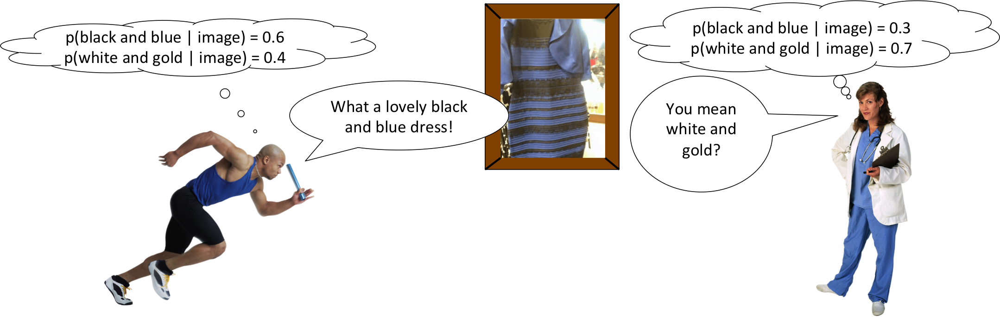

Why do some people perceive that the dress is black and blue, while others perceive that it is white and gold?
We will say that, when viewing the dress, each person subconsciously assigns a probability to each interpretation. The probability that the dress in the image is black and blue will be written p(black and blue | image), while the probability that the dress in the image is white and gold will be written p(white and gold | image). For a given person, whichever probability is higher determines how that person interprets the color of the dress.
You might wonder why these probabilities don't add up to one. That's because there are other possibilities that aren't being considered here. For example, the dress could be red and green. It's very unlikely, so it doesn't take up much probability, but it does take up some.